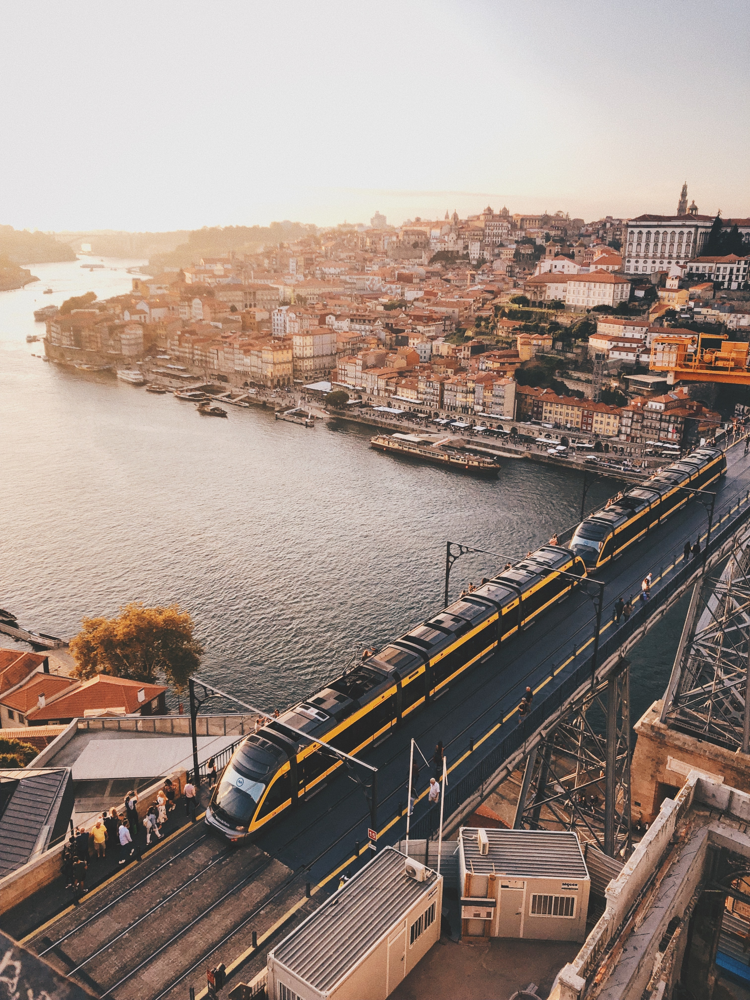

- HTML
- 포르투란?
- 포르투 스팟
porto에 대하여
포르투에서는 자동차를 직접 운전하지 않는 것이 좋아요. 대신 방대한 전철과 트램 전차 및 버스를 이용하시면 편리하지요. 포르투의 오래된 동네에는 걸어서만 들어갈 수 있는 좁은 골목이 많다는 점을 유의하세요. 직접 천천히 걸어다니면서 주변 건축물과 지역 문화를 자세히 살펴보실 수 있어 좋답니다.
포르투(포르투갈어: Porto IPA: [ˈpoɾtu], 문화어: 뽀르또)는 포르투갈 북부의 항구 도시로 포르투갈 제2의 도시이다. 면적은 약 42km2, 인구는 약 24만명이다. 도시 이름은 '항구'라는 뜻으로 대서양으로 흘러 들어가는 도루 강 하구 언덕에 펼쳐져 있다.